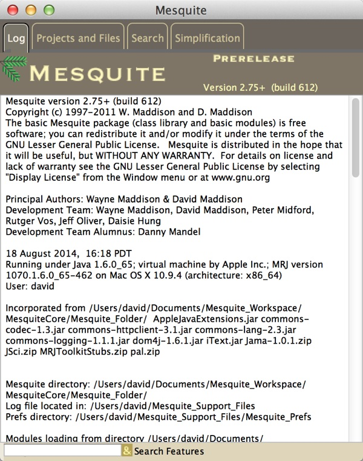
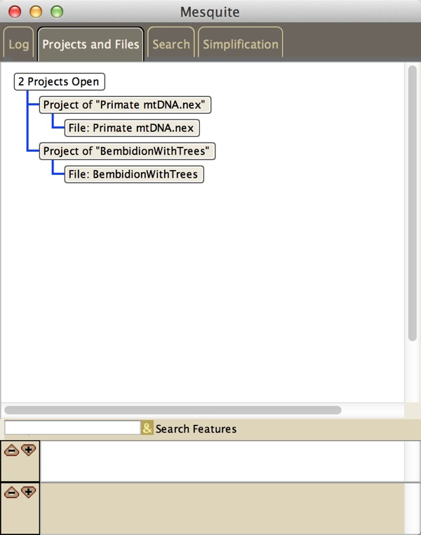
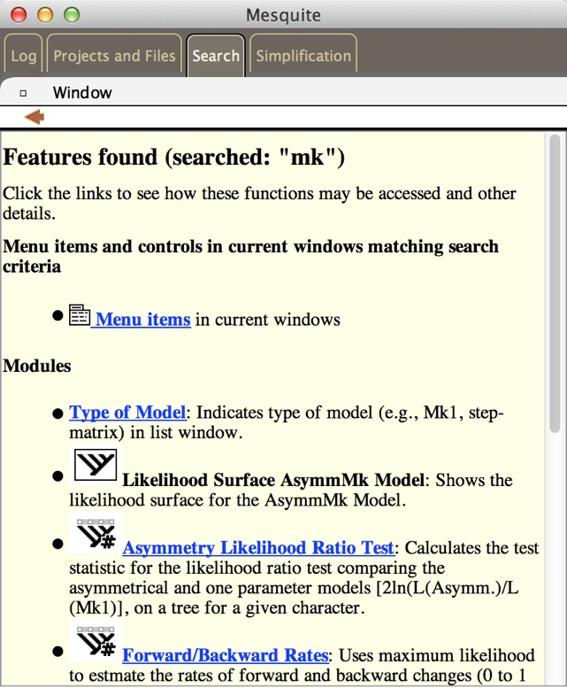
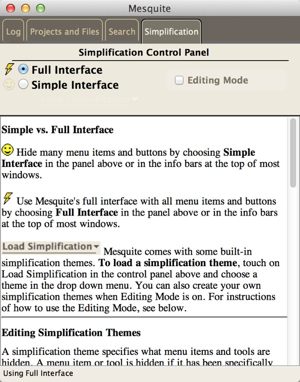
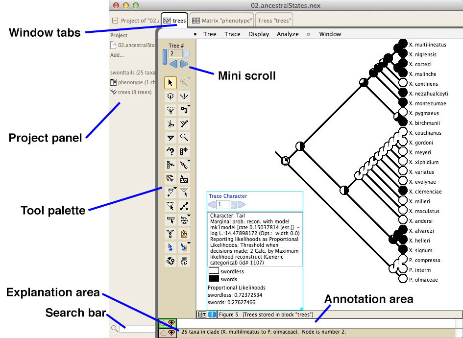
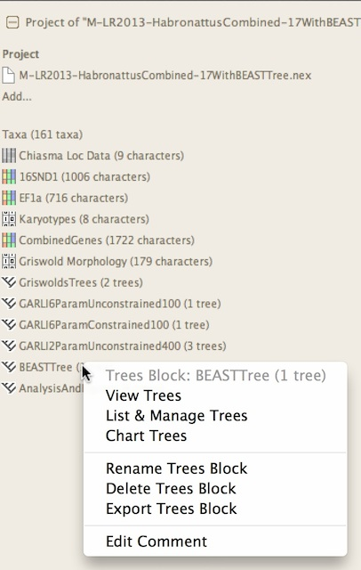
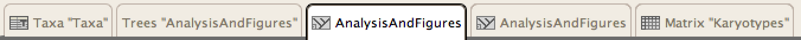

Mesquite's Windows
Separate windows can be bundled together as tabbed panels in the same window. Because most of these panels can exist as separate windows, we will refer to them as "windows" even though you may rarely see them as separate windows.Some basic Mesquite windows are:
- Startup window - the colorful window with the mesquite leaf, the progress bar indicating modules loading, and the banners at right for installed and loaded packages.
- Main Mesquite window - this has three panels, the Log Window, the Project and Files Window, and the Search window. (See images below.)
- Tree Window - the window to view and edit trees
- Character Matrix Editor - a spreadsheet editor for character matrices
- List Windows - show lists of characters, taxa, trees, models and other objects.
Here is an introduction to Mesquite's windows:
Four panels of the main Mesquite window
|  |
 |
| Log Window |
Project & Files Window |
|  |
 |
| Search Window |
Simplification Window |
On this page are explanations of the general features of windows, as well as issues specific to list windows.
You can output a window by printing it, saving it as a PDF file, or saving a text version. To print a window, select from the Print menu items in the File Menu. You can also save the window as a PDF document using Save Window as PDF, or save it as text using Save Window as Text.
Common features of windows
Windows in Mesquite have a consistent structure, with these components commonly appearing:
Here are brief descriptions of some of these:
Project Panel
At the left of most windows is a Project Panel, which summarizes and controls the main "data objects" such as blocks of taxa, character matrices and tree blocks. You can grab its edge to make it wider or narrower, and you can touch the window tab above it to expand it or hide it (depending on whether you hit the "go away" button on the tab or not).The Project Panel has expandable sections (touch on the triangles) and also menus that drop down when you touch on a section. Its sections are:
- at top a list of the files participating in the project (the main file and any linked files)
- a File Incorporation section which helps you import data from other files.
- a New... section that permits you to make new taxa blocks, matrices or tree blocks.
- sections for the taxa blocks, matrices, tree blocks, and other objects belonging to your project.
Here is an example Project Panel with the cursor touched on a section for a trees block. A drop down menu allows you to view or manage the trees block:

Window Tabs
As noted above, windows can exist either separately or bundled within a single window as tabbed panels. When bundled, the window will have a series of tabs at the top that permit you to choose which panel (i.e., which window) you want to see:The highlighted tab is the current window shown.

Tabs can be closed using the that appears when you move the mouse over the tab. By touch this you are asking the window represented by the tab to be closed.
Windows can be "popped out" as independent windows using Window>Pop Out as Separate Window menu item, or popped out as a separate tile using the Window>Put in Separate Tile. A popped out window can be returned to being a tabbed panel within the project window using the pop in button () at the upper left of the popped out window.
You can turn off window bundling by deselecting Open Windows as Tabs in the Defaults submenu of the File menu.
Window view modes
Windows can have alternative view modes that allow you to access information about the window, its calculations, and the modules involved in them. The view modes are available in the Window>View Modes submenu.The first two view modes (Graphics and Text), cause the window to display its basic output (e.g., the spreadsheet data editor, the tree drawn in a tree window) in either a graphics form or a textual form. The remaining modes give information of other sorts.
The window modes are:
- Grapical version of output — The standard output of the window showing results and analyses.
- Textual version of output — A textual version of the results and analyses.
- Parameters of modules — A list of the current settings and parameters of the modules involved in producing the window and its contained results.
- Tree of Modules — Shows the employee tree of all modules participating in the window
- Citations for modules — Gives citations for some of the modules participating in the window.
Mini scrolls
Mini scrolls are used to scroll among trees, characters and other items. The small blue button right of the text edit box, when hit, tells the scroll to enter and use the number within the edit box. Otherwise you can use the arrows to scroll forward or back. If the change is not acceptable (e.g., because you are already at the minimum or maximum value) the arrow is dimmed.
Tool palettes
In various windows are tool palettes that look something like this:
The button of the current tool is shown darker. Usually in the explanation area of the window, an explanation is shown for a tool when you click on it. Some tools (whose buttons may show a small inverted triangle) when double clicked, right-clicked or control-clicked, show a menu in which options can be chosen.
Annotation area
The white annotation area shows footnotes or other annotations stored for taxa, trees, characters or other objects. These annotations are sometimes editable. At its left are two buttons, a minus and a plus arrow. These reduce and increase the height of the annotation area.
Explanation area
The explanation area, below the annotation area, shows explanations for tools, modules, objects in files, and so on. Its height can be contolled by the minus and plus arrows.List Windows
In the Characters and the Taxa&Trees menus are available various windows that give lists of objects with information about each, including the List of Characters and the List of Taxa Windows. Other List Windows present lists of tree blocks, taxa blocks, character matrices, character models, parsimony model sets, and so on. These List Windows have a consistent interface: you can select rows and columns, show and hide columns, and possibly rename and delete objects.
At left of the List Window is a tool palette. The arrow tool allows you to select columns or rows. The I-beam tool allows you to edit the name of an object. The magic wand tool selects all rows that have the same or similar value in the column touched. The magic wand tool has alternative selection criteria that can be chosen by clicking and holding the cursor on the tool in the tool palette. The sort tool reorders the objects listed according the column on which you touch. Thus, if you touch on the leftmost column showing names, the objects would be sorted alphabetically. If you touch on a column showing a numerical result, the objects are sorted in ascending or descending order of the number. The sort tool sorts in ascending order by default, but by descending order if the option or ALT key is held down.
Each List Window has a Columns menu, with which you can show or hide columns. Some columns merely inform you of some quality of the object. Others may represent analyses. For instance, the column may show the value of some statistic for each of the characters listed in the List of Characters window.
For some of the List Windows, you can ask to delete the objects whose rows are selected by choosing "Delete Selected" from the List menu.